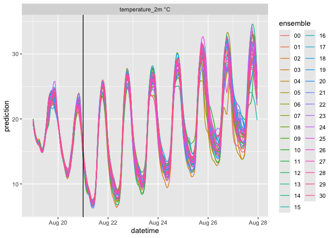

R wrappers for APIs on Open-Meteo project. The Open-Meteo is a amazing project that streamlines the access to a range of publicly historical and forecasted meteorology data from agencies across the world. The free access tier allows for 10,000 API calls per day. The paid tiers increase the number of daily API calls . Learn more about the Open-Meteo project at their website (https://open-meteo.com) and consider supporting their efforts.
Open-Meteo citation: Zippenfenig, Patrick. (2023). Open-Meteo.com Weather API (0.2.69). Zenodo. https://doi.org/10.5281/zenodo.8112599
The package includes additional functionally to facilitate the use in mechanistic environmental/ecological models. This includes the calculation of longwave radiation (not provided through the API) from air temperature and cloud cover, the writing of output to the format required by the General Lake Model (GLM), and the conversion to the standard used in the NEON Ecological Forecasting Challenge that is run by the Ecological Initiative Research Coordination Network (https://neon4cast.org).
The package uses a long format standard with the following columns
-
datetime= date and time of forecasted value -
reference_datetime= the date and time of the beginning of the forecast (horizon = 0). Does not apply to historical weather. -
site_id= column to identify site location. If null in function call it defaults to latitude_longitude -
model_id= id of model that generated the forecast -
ensemble= ensemble member number (only for ensemble weather and seasonal forecasts) -
variable= forecasted variable -
prediction= forecasted value -
unit= units of the variable
Quick Start
Ensemble forecasts from individual models are available.
https://open-meteo.com/en/docs/ensemble-api
df <- RopenMeteo::get_ensemble_forecast(
latitude = 37.30,
longitude = -79.83,
forecast_days = 7,
past_days = 2,
model = "gfs_seamless",
variables = c("temperature_2m"))
head(df)## # A tibble: 6 × 8
## datetime reference_datetime site_id model_id ensemble variable
## <dttm> <dttm> <chr> <chr> <chr> <chr>
## 1 2024-08-19 00:00:00 2024-08-21 00:00:00 37.3_-79.83 gfs_sea… 00 tempera…
## 2 2024-08-19 00:00:00 2024-08-21 00:00:00 37.3_-79.83 gfs_sea… 01 tempera…
## 3 2024-08-19 00:00:00 2024-08-21 00:00:00 37.3_-79.83 gfs_sea… 02 tempera…
## 4 2024-08-19 00:00:00 2024-08-21 00:00:00 37.3_-79.83 gfs_sea… 03 tempera…
## 5 2024-08-19 00:00:00 2024-08-21 00:00:00 37.3_-79.83 gfs_sea… 04 tempera…
## 6 2024-08-19 00:00:00 2024-08-21 00:00:00 37.3_-79.83 gfs_sea… 05 tempera…
## # ℹ 2 more variables: prediction <dbl>, unit <chr>The resulting dataframe is in a long format that is easily visualized using ggplot
df |>
mutate(variable = paste(variable, unit)) |>
ggplot(aes(x = datetime, y = prediction, color = ensemble)) +
geom_line() +
geom_vline(aes(xintercept = reference_datetime)) +
facet_wrap(~variable, scale = "free", ncol = 2)